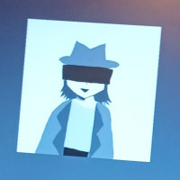
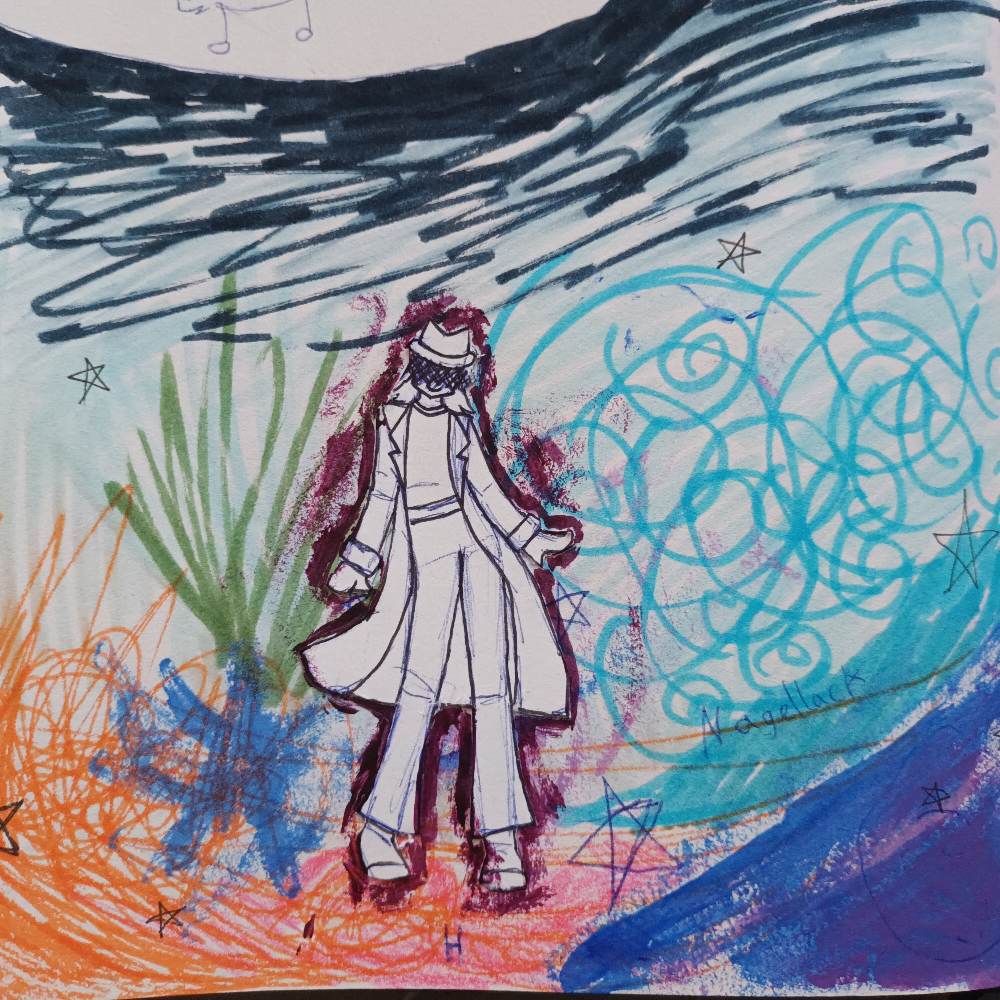
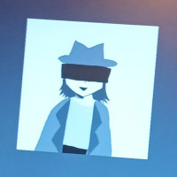
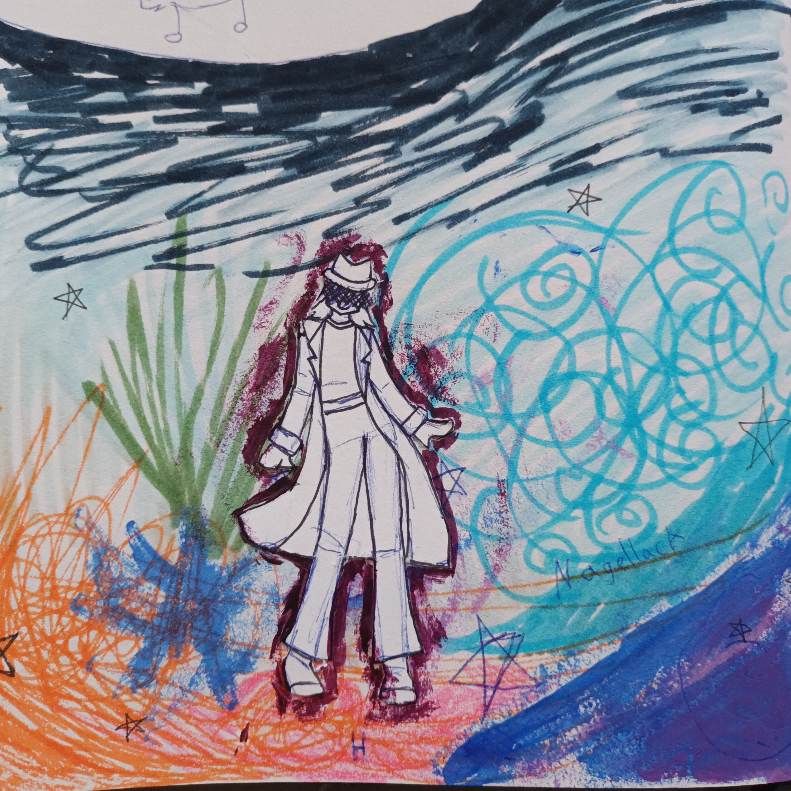

Kate and how she was created
Kate was my first OC ever. Tho her name wasnt Kate, it was my name at the time. Little me (around 4 years old if not younger) had created her as a mia-and-me selfinsert. She was a confident rainbow elf with a castle inbetween dimensions. Thats what stayed: Her ability to travel between worlds. Just that back then it was Mia and Me, later Star Wars, a dimension in between, Harry Potter, and so many other worlds from my various interests, and now its mostly completely original dimensions. Her personality was at first just an ideal version of me, but that changed quickly. And after she gained magic, character flaws and so on I decided she was her own character now, and gave her her own name, a new character-design, and a backstory. I kept most of her adventures in the dimension between so shes still the same her. I too changed (gender and personality-wise) so now theres nothing connecting us anymore. I thought she needed some friends and enemies too, so thats how basically most of my other OCs came to be. Her World really does revolve around her. Four years ago I decided to write down some of her adventures, so I nerfed her magical abilities quite a bit to make things interesting (but shes still a little overpowered) and finally got to start writing the first book a year ago. Its a little murder-mystery in a magical kinda-but-not-university. Mostly comedy. And yeah thats all the Kate history until now. (Aside from some little things like sneaking her into fanfic, or my dnd campains)
youd think im her biggest fan owning so much official art, but no, its actually my friend trulla. but she ships kate with kraxktl which i find to be very problematic since kate is canonically aroace and kraxktl is ancient. so not only does the kate-verse have fans now, but also controversy. its come so far, im very proud.
 


